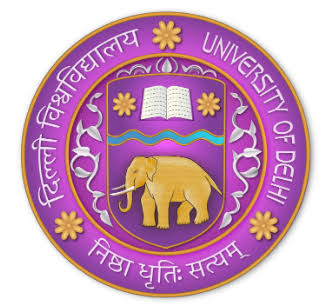
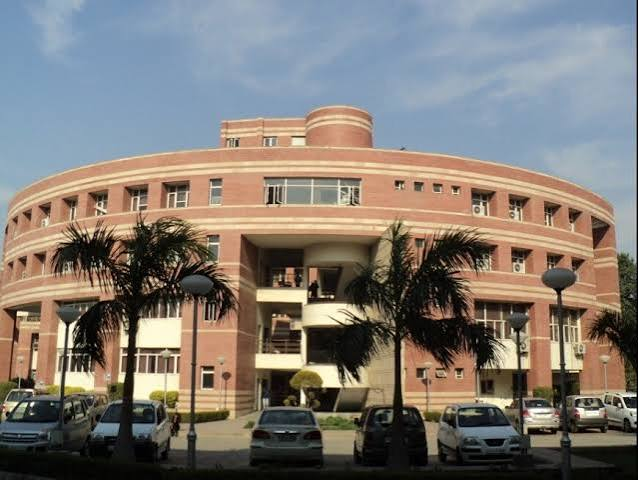

Vision
To be a globally recognized center of excellence in computer science education and research, fostering innovation, ethical leadership, and technological advancement for societal benefit.

University of Delhi
Empowering Innovation through Computing and Research
University of Delhi
Advancing computer science education, research and innovation.
The Department of Computer Science was established in the University of Delhi in the year 1981 with the objective of imparting quality education in the field of Computer Science. The Department has modern facilities for teaching, learning, and research. It offers a wide array of research opportunities and programs of study at undergraduate and postgraduate levels. With rapidly evolving technology and the continuous need for innovation, the Department has always produced quality professionals holding important positions in the Information Technology industry in India and abroad.

Established in 1981, the Department began its academic journey by introducing the three-year Master of Computer Applications (MCA) programme in 1982, which was among the first such programmes in India. In 2004, the Department launched the two-year Master of Science (M.Sc.) in Computer Science programme to cater to the growing demand for specialized computer science research and education. Later, in 2015, it introduced the Doctor of Philosophy (Ph.D.) programme to foster advanced research across core and interdisciplinary computing domains.
To be a globally recognized center of excellence in computer science education and research, fostering innovation, ethical leadership, and technological advancement for societal benefit.
The Department is a postgraduate and research department. It also centrally coordinates the curriculum and academic framework for undergraduate programmes taught across constituent colleges of the University of Delhi.
A four-year undergraduate programme under the National Education Policy undergraduate framework, focusing on core computing, algorithms, software engineering and systems.
Multidisciplinary undergraduate programmes combining computer science with mathematics and physical sciences.
A two-year, four-semester full-time postgraduate programme focusing on advanced theoretical computer science, artificial intelligence, data engineering, networking and research methodology.
A two-year, four-semester professional postgraduate programme designed to build strong software development, system architecture and application engineering skills.
A doctoral research programme with admission through the applicable entrance test, NET/JRF qualification and interview process.
Research spans core and interdisciplinary areas of computer science.
Admission Information Course Syllabus Examination Information
The Department promotes research across foundational, applied and interdisciplinary areas of computing, including:
| Faculty name | Designation | Date of joining |
|---|---|---|
| Prof. Neelima Gupta | Professor and Head of Department | Not publicly listed |
| Prof. Punam Bedi | Senior Professor | Not publicly listed |
| Prof. Vasudha Bhatnagar | Senior Professor | Not publicly listed |
| Prof. Naveen Kumar | Senior Professor | Not publicly listed |
| Prof. R. K. Agrawal | Professor | Not publicly listed |
| Dr. Reena Kasana | Associate Professor | Not publicly listed |
| Dr. Om Pal | Associate Professor | Not publicly listed |
| Dr. Vikas Kumar | Assistant Professor | Not publicly listed |
Five-day departmental training workshop on quantum computing fundamentals and applications.
Welcome and academic orientation session organized for incoming postgraduate students.
Flagship annual technical symposium organized by the Delhi University Computer Science Society (DUCSS).
Regular academic talks on Artificial Intelligence, Open Source Intelligence, and Augmented Reality.
Notification, list of eligible applicants, and interview schedule for Phase-I Ph.D. admissions.
Departmental academic calendar and Discipline Specific Elective lists for M.Sc. CS and MCA semesters.
Guidelines and schedule for filling examination forms and course verification on the Samarth portal.
Official notification and application schedule for guest faculty positions in the Department.
Updated doctoral research ordinance and supervisor recognition guidelines effective for the 2026–27 session.
Announcement of fellowship awards and post-doctoral research selections under national AI and electronics schemes.
Updated postgraduate evaluation structure under the Postgraduate Curriculum Framework (PGCF).
Updates on Dr. Dev Raj Seth & Smt. Shushila Seth Scholarship and DU Financial Support Scheme.